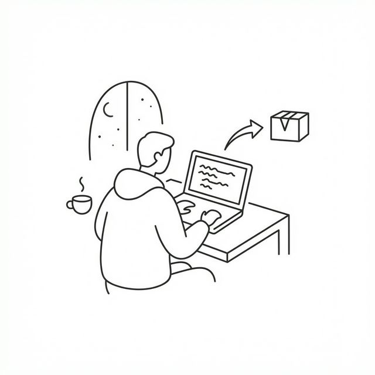

"I'll build it once I learn X." "I need to master Docker
before I deploy this."
These are the lies we tell ourselves to procrastinate
shipping.
The biggest mistake developers make is treating side projects as academic exercises rather than products. The "Builder's Mindset" is about prioritizing shipping over perfection.
Tutorial Hell vs. Production Hell
Tutorials are safe. You type what the instructor types, and it works. But you don't learn engineering in tutorials; you learn syntax.
Production Hell is where you learn. It's when your database connection times out, when your CORS policy blocks your frontend, or when a user does something you never expected. You can't simulate this. You have to ship to experience it.
Just Ship It
When I built TeacherOP, the code wasn't pretty. I
used a monolithic
index.js
file for way too long. But it worked. Users were using it.
- Start Small: Build a tiny feature that works.
- Ignore Best Practices (Initially): Don't set up a K8s cluster for a todo app. A single VM or Vercel deployment is fine.
- Iterate: Refactor only when the code becomes a bottleneck.
The Outcome
Side projects show potential employers that you have agency. You don't wait to be told what to do; you identify a problem and build a solution. That is the most valuable skill in the market today.